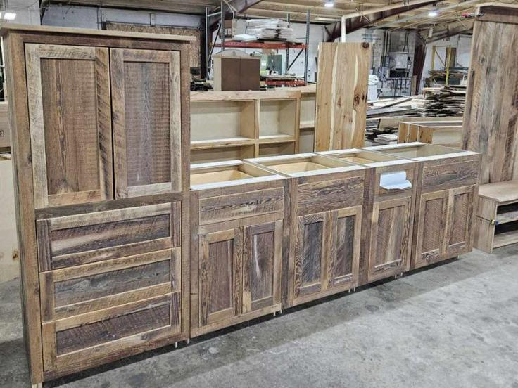

USES AND APPLICATION
Furniture and Cabinetry
Coco lumber is crafted into a wide range of furniture and cabinetry, including tables, chairs, cabinets, shelves, bed frames, and storage units. Its strength allows it to support weight and repeated use, while its unique wood grain gives furniture pieces a distinctive and natural look. Artisans and manufacturers often combine coco lumber with other materials such as metal or rattan to create modern, eco-friendly designs. Cabinets and shelves made from coco lumber are valued for their durability and sustainability, making them suitable for kitchens, living rooms, offices, and commercial spaces. Proper finishing enhances resistance to moisture, stains, and daily wear.